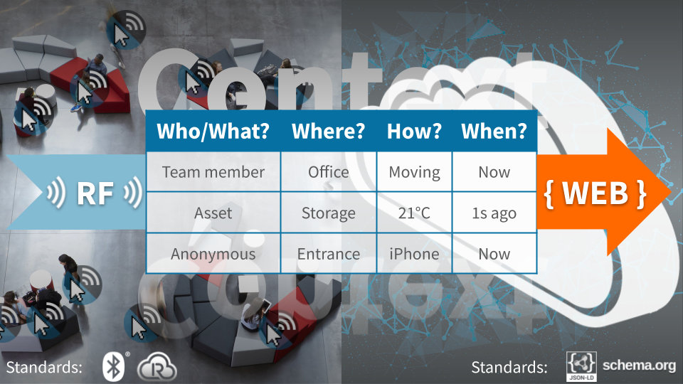
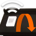
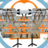

For reelyActive Users & Developers
Our open architecture affords the freedom to do-it-yourself
Platform Overview
Understand physical spaces and the real-time dynamics of the people and assets within.
The reelyActive technology platform makes it possible to observe who/what is where/how, in real-time, in any physical space. This is achieved by detecting and locating all the radio-identifiable devices that are present, and then representing this information in the standard language of the web.
The result is effectively a table of who/what is present, updating in real-time, and including details on the location and status of each occupant. While simple in concept, this table enables complex and wide-reaching applications, especially when stored in a database for analysis over time.
Open Architecture
Enjoy the freedom and flexibility of interchangeable software and hardware components.
Tens of billions of radio-identifiable devices are shipping annually. Countless vendors, including reelyActive, offer radio-identification and location infrastructure. Our open source middleware translates their output into a real-time, web-standard data stream to feed any database and/or drive any web application.
Radio-identifiable devices
Representing people, products and places at a human scale
-

Best practices for BLE identifiers
Assignment of Bluetooth Low Energy identifiers for interoperability and interpretability. -

Configure a Minew E8 beacon
Our step-by-step guide to configure an E8 beacon with the BeaconSET+ app. -

Configure a Minew C6 beacon
Our step-by-step guide to configure a C6 beacon with the BeaconSET+ app. -

Configure a Minew S1 beacon
Our step-by-step guide to configure a S1 beacon with the BeaconSET+ app.
Additional references
Radio-identification infrastructure
Detecting & locating people, products and places at a human scale
-

Prepare a Raspberry Pi from scratch
Our step-by-step guide to prepare a lean yet versatile SD card image for the Pi. -

Configure an Owl-in-One
Our step-by-step guide to configure the WiFi and/or program the software of an Owl-in-One. -

Create a WLAN of Owl-in-Ones and a laptop
Our step-by-step guide to create a local wireless network by configuring an Owl-in-One as an access point.
Additional references
Middleware: the "glue" between physical and digital
Connecting countless hardware and software combinations
-

Enabling computers to understand who/what is where/how
Overview of the key insight behind reelyActive's technology and open source software. -

Install our open source software suite on a laptop
Our step-by-step guide to run reelyActive's open source software suite on a laptop or personal computer. -

Install our open source software suite on a Pi
Our step-by-step guide to make a Raspberry Pi into an open RTLS, RFID and M2M platform. -

Open Source Software packages list
A canonical list and descriptions of the core reelyActive OSS packages.
Additional references
Databases and analytics suites
Storing the real-time data stream and facilitating analysis over time
-

Kibana integration overview
Our guide to integrating and using Kibana with our open source software. -

Set up a hosted Elasticsearch Service
Our step-by-step guide to setup Elastic's hosted cloud service for use with our open source software. -

Prepare a reelyActive laptop from scratch
Our step-by-step guide to prepare a laptop with the minimum prerequisites for our open source software.
Additional references
Software applications
Delivering efficiencies and experiences
-

Pareto Anywhere (Web App)
Run Pareto Anywhere in a web browser that supports the experimental Web Bluetooth Scanning feature. -

Detect Interaction with a Hinged Object
Detect interaction with a door, lid or handle and visualise the timeseries data in Kibana. -

Notman House showcase
Learn about the reelyActive platform through real-world examples.
Additional references
Popular Content
Frequently accessed tutorials and references.
reelyActive on the Web
Related content of interest.